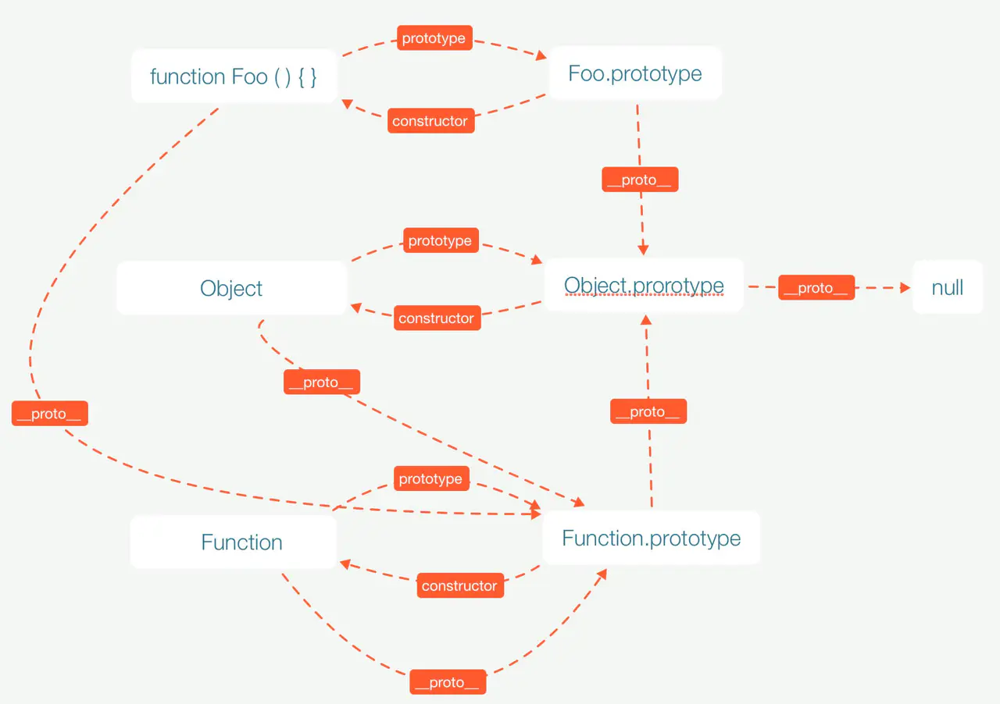

<!DOCTYPE html><html><head><meta charSet="utf-8"/><meta name="viewport" content="width=device-width, initial-scale=1.0"/><meta name="keywords" content="liaohaoxiang,Neo&#x27;s Blog,廖浩翔博客,廖浩翔"/><link rel="icon shortcut" href="/images/favicon.ico" type="image/x-icon"/><meta name="description" content="Neo&#x27;s Blog Record Tech and Life"/><meta http-equiv="X-UA-Compatible" content="IE=edge"/><meta name="og:title" content="Neo&#x27;s Blog"/><title>原型与继承</title><meta name="next-head-count" content="8"/><link rel="preload" href="/_next/static/css/2ba609f3e3e96ef54b12.css" as="style"/><link rel="stylesheet" href="/_next/static/css/2ba609f3e3e96ef54b12.css"/><link rel="preload" href="/_next/static/css/e8d2c8f8e77bf5a8e493.css" as="style"/><link rel="stylesheet" href="/_next/static/css/e8d2c8f8e77bf5a8e493.css"/><link rel="preload" href="/_next/static/chunks/main-f01cf1dcca173d7f43b1.js" as="script"/><link rel="preload" href="/_next/static/chunks/webpack-ccf5ab034a524403276a.js" as="script"/><link rel="preload" href="/_next/static/chunks/framework.ea5d6f7a7099b14097ba.js" as="script"/><link rel="preload" href="/_next/static/chunks/0cdde6b1.6bb1f7e7a47acc14b5e0.js" as="script"/><link rel="preload" href="/_next/static/chunks/commons.8603a0a43c7f28715fd3.js" as="script"/><link rel="preload" href="/_next/static/chunks/pages/_app-438ffaa2dd16e254e8a6.js" as="script"/><link rel="preload" href="/_next/static/chunks/pages/posts/%5Bid%5D-641ef7cedfb9baa0f530.js" as="script"/></head><body><div id="__next"><div class="max-w-xxl px-4 py-0 mt-12 mx-auto mb-24"><header class="flex flex-col items-center"></header><main><article class=""><h1 class="text-sm sm:text-3xl font-extrabold my-4 leading-tight">原型与继承</h1><div class="text-sm text-gray-500">编辑于:<!-- -->2020-08-06</div><br/><div><p>明确概念 ： </p>
<ol>
<li>构造函数</li>
</ol>
<pre><code class="hljs language-js"><span class="hljs-function"><span class="hljs-keyword">function</span> <span class="hljs-title">Foo</span>(<span class="hljs-params">name</span>)</span>{
    <span class="hljs-built_in">this</span>.name = name
  } </code></pre>
<blockquote>
<p>特征：函数名大写开头,用来生成新对象</p>
</blockquote>
<ol start="2">
<li>原型对象 Foo.prototype</li>
</ol>
<blockquote>
<p>特征：显式原型,用了实现继承。打印: Foo.prototype === instance.<code>__proto__</code>   //true</p>
</blockquote>
<ol start="3">
<li>实例 var instance = new Foo('neo') </li>
</ol>
<blockquote>
<p>特征：用构造函数生产出来的对象,打印: Foo {name:"neo"}</p>
</blockquote>
<ol start="4">
<li>每个实例对象（ object ）都有一个私有属性（称之为<code>__proto__</code> ）指向它的构造函数的原型对象（prototype ）</li>
</ol>
<h3>三个属性关系</h3>
<p>一段说明代码</p>
<pre><code class="hljs language-js"><span class="hljs-function"><span class="hljs-keyword">function</span> <span class="hljs-title">Foo</span>(<span class="hljs-params"></span>) </span>{
  <span class="hljs-built_in">this</span>.name = name
}

<span class="hljs-keyword">var</span> instance = <span class="hljs-keyword">new</span> Foo(<span class="hljs-string">'neo'</span>)

<span class="hljs-built_in">console</span>.log(Foo.prototype)
<span class="hljs-built_in">console</span>.log(Foo.prototype.constructor)
<span class="hljs-built_in">console</span>.log(Foo.__proto__)
<span class="hljs-built_in">console</span>.log(Foo.prototype.__proto__)

<span class="hljs-built_in">console</span>.log(instance.constructor)
<span class="hljs-built_in">console</span>.log(instance.__proto__)

<span class="hljs-comment">// {constructor: ƒ}</span>
<span class="hljs-comment">// ƒ Foo() {this.name = name}</span>
<span class="hljs-comment">// ƒ () { [native code] }</span>
<span class="hljs-comment">// {constructor: ƒ, __defineGetter__: ƒ, __defineSetter__:…}</span>

<span class="hljs-comment">// ƒ Foo() {this.name = name}</span>
<span class="hljs-comment">// {constructor: ƒ}</span></code></pre>
<p>Foo (构造函数) , Foo.prototype (原型对象) ,  instance (实例) 三个东西</p>
<p>Foo.prototype === instance.<em>proto</em></p>
<p>instance.constructor === Foo === Foo.prototype.constructor </p>
<p>Foo.prototype.<code>__proto__</code> === Object.prototype</p>
<h3>属性讲解</h3>
<ul>
<li>prototype(指向原型对象)</li>
</ul>
<p>只有<code>函数</code>才会有这个属性,在上述代码可以看到,返回一个对象,对象里有一个<code>constructor</code>的方法。</p>
<ul>
<li>constructor(指向原型对象的构造函数)</li>
</ul>
<p>在<code>Foo.prototype.constructor</code>打印中发现,它指向函数本身,所以这两个属性其实是一个转换过程</p>
<blockquote>
<p>Foo => Foo.prototype => Foo.prototype.constructor => Foo</p>
</blockquote>
<ul>
<li><code>__proto__ </code> (指向创建该对象的构造函数原型)</li>
</ul>
<p>每个对象都有<code>__proto__ </code> ,隐式的原型属性(prototype是显性的),原型链就是利用<em>proto</em>实现一层一层接驳,达到访问原型链上不属于自己的属性</p>
<p>Foo.<code>__proto__ </code>指向的是Function.prototype,因为Foo的上一层是Function</p>
<blockquote>
<p>完整原型链: Foo => Foo.<code>__proto__ </code> => Function.prototype => Function.prototype.<code>__proto__ </code> => Object.prototype => Object.prototype.<code>__proto__ </code>=> null</p>
</blockquote>
<p>附上一张图</p>
<p></p>
</div></article></main><div class="mt-12"><a href="/">← Back to home</a></div></div></div><script id="__NEXT_DATA__" type="application/json">{"props":{"pageProps":{"postData":{"id":"js原型与继承","content":"\u003cp\u003e明确概念 ： \u003c/p\u003e\n\u003col\u003e\n\u003cli\u003e构造函数\u003c/li\u003e\n\u003c/ol\u003e\n\u003cpre\u003e\u003ccode class=\"hljs language-js\"\u003e\u003cspan class=\"hljs-function\"\u003e\u003cspan class=\"hljs-keyword\"\u003efunction\u003c/span\u003e \u003cspan class=\"hljs-title\"\u003eFoo\u003c/span\u003e(\u003cspan class=\"hljs-params\"\u003ename\u003c/span\u003e)\u003c/span\u003e{\n    \u003cspan class=\"hljs-built_in\"\u003ethis\u003c/span\u003e.name = name\n  } \u003c/code\u003e\u003c/pre\u003e\n\u003cblockquote\u003e\n\u003cp\u003e特征：函数名大写开头,用来生成新对象\u003c/p\u003e\n\u003c/blockquote\u003e\n\u003col start=\"2\"\u003e\n\u003cli\u003e原型对象 Foo.prototype\u003c/li\u003e\n\u003c/ol\u003e\n\u003cblockquote\u003e\n\u003cp\u003e特征：显式原型,用了实现继承。打印: Foo.prototype === instance.\u003ccode\u003e__proto__\u003c/code\u003e   //true\u003c/p\u003e\n\u003c/blockquote\u003e\n\u003col start=\"3\"\u003e\n\u003cli\u003e实例 var instance = new Foo('neo') \u003c/li\u003e\n\u003c/ol\u003e\n\u003cblockquote\u003e\n\u003cp\u003e特征：用构造函数生产出来的对象,打印: Foo {name:\"neo\"}\u003c/p\u003e\n\u003c/blockquote\u003e\n\u003col start=\"4\"\u003e\n\u003cli\u003e每个实例对象（ object ）都有一个私有属性（称之为\u003ccode\u003e__proto__\u003c/code\u003e ）指向它的构造函数的原型对象（prototype ）\u003c/li\u003e\n\u003c/ol\u003e\n\u003ch3\u003e三个属性关系\u003c/h3\u003e\n\u003cp\u003e一段说明代码\u003c/p\u003e\n\u003cpre\u003e\u003ccode class=\"hljs language-js\"\u003e\u003cspan class=\"hljs-function\"\u003e\u003cspan class=\"hljs-keyword\"\u003efunction\u003c/span\u003e \u003cspan class=\"hljs-title\"\u003eFoo\u003c/span\u003e(\u003cspan class=\"hljs-params\"\u003e\u003c/span\u003e) \u003c/span\u003e{\n  \u003cspan class=\"hljs-built_in\"\u003ethis\u003c/span\u003e.name = name\n}\n\n\u003cspan class=\"hljs-keyword\"\u003evar\u003c/span\u003e instance = \u003cspan class=\"hljs-keyword\"\u003enew\u003c/span\u003e Foo(\u003cspan class=\"hljs-string\"\u003e'neo'\u003c/span\u003e)\n\n\u003cspan class=\"hljs-built_in\"\u003econsole\u003c/span\u003e.log(Foo.prototype)\n\u003cspan class=\"hljs-built_in\"\u003econsole\u003c/span\u003e.log(Foo.prototype.constructor)\n\u003cspan class=\"hljs-built_in\"\u003econsole\u003c/span\u003e.log(Foo.__proto__)\n\u003cspan class=\"hljs-built_in\"\u003econsole\u003c/span\u003e.log(Foo.prototype.__proto__)\n\n\u003cspan class=\"hljs-built_in\"\u003econsole\u003c/span\u003e.log(instance.constructor)\n\u003cspan class=\"hljs-built_in\"\u003econsole\u003c/span\u003e.log(instance.__proto__)\n\n\u003cspan class=\"hljs-comment\"\u003e// {constructor: ƒ}\u003c/span\u003e\n\u003cspan class=\"hljs-comment\"\u003e// ƒ Foo() {this.name = name}\u003c/span\u003e\n\u003cspan class=\"hljs-comment\"\u003e// ƒ () { [native code] }\u003c/span\u003e\n\u003cspan class=\"hljs-comment\"\u003e// {constructor: ƒ, __defineGetter__: ƒ, __defineSetter__:…}\u003c/span\u003e\n\n\u003cspan class=\"hljs-comment\"\u003e// ƒ Foo() {this.name = name}\u003c/span\u003e\n\u003cspan class=\"hljs-comment\"\u003e// {constructor: ƒ}\u003c/span\u003e\u003c/code\u003e\u003c/pre\u003e\n\u003cp\u003eFoo (构造函数) , Foo.prototype (原型对象) ,  instance (实例) 三个东西\u003c/p\u003e\n\u003cp\u003eFoo.prototype === instance.\u003cem\u003eproto\u003c/em\u003e\u003c/p\u003e\n\u003cp\u003einstance.constructor === Foo === Foo.prototype.constructor \u003c/p\u003e\n\u003cp\u003eFoo.prototype.\u003ccode\u003e__proto__\u003c/code\u003e === Object.prototype\u003c/p\u003e\n\u003ch3\u003e属性讲解\u003c/h3\u003e\n\u003cul\u003e\n\u003cli\u003e\bprototype(指向原型对象)\u003c/li\u003e\n\u003c/ul\u003e\n\u003cp\u003e只有\u003ccode\u003e函数\u003c/code\u003e才会有这个属性,在上述代码可以看到,返回一个对象,对象里有一个\u003ccode\u003econstructor\u003c/code\u003e的方法。\u003c/p\u003e\n\u003cul\u003e\n\u003cli\u003econstructor(指向原型对象的构造函数)\u003c/li\u003e\n\u003c/ul\u003e\n\u003cp\u003e在\u003ccode\u003eFoo.prototype.constructor\u003c/code\u003e打印中发现,它指向函数本身,所以这两个属性其实是一个转换过程\u003c/p\u003e\n\u003cblockquote\u003e\n\u003cp\u003eFoo =\u003e Foo.prototype =\u003e Foo.prototype.constructor =\u003e Foo\u003c/p\u003e\n\u003c/blockquote\u003e\n\u003cul\u003e\n\u003cli\u003e\u003ccode\u003e__proto__ \u003c/code\u003e (指向创建该对象的构造函数原型)\u003c/li\u003e\n\u003c/ul\u003e\n\u003cp\u003e每个对象都有\u003ccode\u003e__proto__ \u003c/code\u003e ,隐式的原型属性(prototype是显性的),原型链就是利用\u003cem\u003eproto\u003c/em\u003e实现一层一层接驳,达到访问原型链上不属于自己的属性\u003c/p\u003e\n\u003cp\u003eFoo.\u003ccode\u003e__proto__ \u003c/code\u003e指向的是Function.prototype,因为Foo的上一层是Function\u003c/p\u003e\n\u003cblockquote\u003e\n\u003cp\u003e完整原型链: Foo =\u003e Foo.\u003ccode\u003e__proto__ \u003c/code\u003e =\u003e Function.prototype =\u003e Function.prototype.\u003ccode\u003e__proto__ \u003c/code\u003e =\u003e Object.prototype =\u003e Object.prototype.\u003ccode\u003e__proto__ \u003c/code\u003e=\u003e null\u003c/p\u003e\n\u003c/blockquote\u003e\n\u003cp\u003e附上一张图\u003c/p\u003e\n\u003cp\u003e\u003cimg src=\"../images/PrototypeChain.png\" alt=\"prototypechain\"\u003e\u003c/p\u003e\n","title":"原型与继承","date":"2020-08-06","kind":"Base"}},"__N_SSG":true},"page":"/posts/[id]","query":{"id":"js原型与继承"},"buildId":"qtP6VDlccOYJ-JuhJJjlm","nextExport":false,"isFallback":false,"gsp":true}</script><script nomodule="" src="/_next/static/chunks/polyfills-9297741ddbbb81bca141.js"></script><script src="/_next/static/chunks/main-f01cf1dcca173d7f43b1.js" async=""></script><script src="/_next/static/chunks/webpack-ccf5ab034a524403276a.js" async=""></script><script src="/_next/static/chunks/framework.ea5d6f7a7099b14097ba.js" async=""></script><script src="/_next/static/chunks/0cdde6b1.6bb1f7e7a47acc14b5e0.js" async=""></script><script src="/_next/static/chunks/commons.8603a0a43c7f28715fd3.js" async=""></script><script src="/_next/static/chunks/pages/_app-438ffaa2dd16e254e8a6.js" async=""></script><script src="/_next/static/chunks/pages/posts/%5Bid%5D-641ef7cedfb9baa0f530.js" async=""></script><script src="/_next/static/qtP6VDlccOYJ-JuhJJjlm/_buildManifest.js" async=""></script><script src="/_next/static/qtP6VDlccOYJ-JuhJJjlm/_ssgManifest.js" async=""></script></body></html>